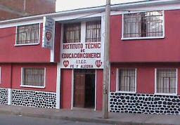

INSTITUTO TECNICO COMERCIAL FE Y ALEGRIA
ITEC
HISTORIA
INTITUTO TECNICO COMERCIAL FE Y ALEGRIA

I.T.E.C. Fe y Alegria perteneciente a la gran familia de “Fe y Alegría” desde 1989. El Instituto Técnico Comercial (I.TE.C.) brinda formación en Educación Superior no Universitaria en horario nocturno, desde las 18:30pm., hasta las 22 : 30 pm. A partir de la gestión 2005 contamos con infraestructura propia, ubicada en la zona baja de la ciudad de Potosí. Actualmente I.TE.C. “Fe y Alegría” cuenta con la Resolución Administrativa 022/89 de fecha 9 de octubre de 1989 y la Resolución Ministerial 291/98 de fecha 3 de septiembre de 1998. El Instituto, en la actualidad forma profesionales a nivel Técnico Superior en las Carreras de: Contabilidad, Secretariado e Analista de Sistemas Fe y Alefria es una organización se caracteriza como un movimiento que educativa popular y de promoción social, que tiene su origen en Venezuela y fue fundado en 1955 por el Rvdo. Padre José María Velas; después de más de una decada, en Bolivia, concretamente en la ciudad de La Paz, en 1966 surge Fe y Alegría gracias al impulso de Humberto Portocarrero; al año siguiente en la Villa Imperial, en el domicilio particular de la familia Vera, en calle 1º de mayo, frente a la unidad educativa Fray Vicente Bernedo, zona de San Roque, un 15 de abril de 1967 se crea Fe y Alegría, como una alternativa de crédito educación popular al servicio de los más necesitados, en diferentes ciclos y niveles. Después de largas gestiones administrativas, principalmente por la Dirección Departamental de “Fe y Alegria”, a la cabeza de la Profesora Elizaneth chungara de Villalba y por una donación de la Embajada Japonesa, en la gestión del 2005, el Instituto cuenta con su propio edificio, situado en la Av. Argentina nº70-A,Ciudad Satelite; en este edificio fue Rector el Prof. Fausto Caceres Alvarez, quien cumplió satisfactoriamente durante dos años. En la actualidad se desempeña como Rectora la Dra. Betty Torres Cordova, con medidas acertadas y llevando en alto el nombre de nuestro instituto. El instituto actualmente tiene una infraestructura adecuada contando con tres Gabinetes de Informatica con equipos de última generación, equipos de Ofimatica para la práctica de la Carrera de Secretariado Ejecutivo, Biblioteca especializada para las carreras de Secretariado Ejecutivo, Contabilidad General e Informatica; para el proceso enseñanza-aprendizaje se utilizan tecnologías de última generación como Data Display y Retroproyectora; sus ambientes son cálidos, con pizarras acrílicas y una infraestructura totalmente nueva. Misión y Visión El I.T.E.C. “Fe y Alegría” de Potosí, es un Centro Educativo fiscal de convenio acreditado, equipada con laboratorios y talleres de acuerdo al avance de las TICs, con un Sistema Académico flexible basado en competencias laborales con altos valores cristianos y éticos. Aspiramos a que el ITEC “Fe y Alegría” como la institución pública de educación superior no universitaria más importante de educación, es una institución de excelencia, pertinente eficiente, competitiva y ofrecer un servicio de calidad donde se privilegie la interculturalidad en la formación profesional de estudiantes, en el trabajo en equipo de docentes y la práctica cotidiana de valores humanos de manera profesional a favor de la formación integral de los estudiantes El ITEC “Fe y Alegría” tiene como misión fundamental la formación superior de estudiantes, en el ámbito de su jurisdicción territorial Somos un Instituto de educación Comercial a nivel Técnico Superior; por la que, desde los pueblos y desde sus culturas posibilitar y garantizar que el ISEC “Fe y Alegría” sea la institución educativa más importante, tecnológicamente actualizada y a partir del cultivo de valores humanos en la prestación de servicios, para el mejoramiento de la educación y por tanto de la vida de los habitantes de la ciudad de Potosí y su efectiva participación en el proceso de liberación, transformación social y desarrollo de la identidad nacional.
volver